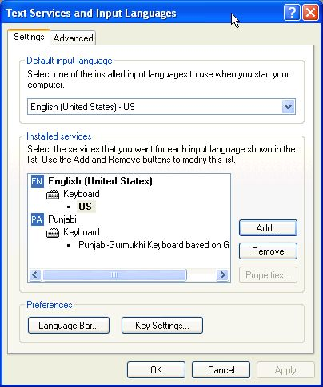

|
Gurmukhi | Devanagari | Translations | Special Bani | Bani by Author | Shahmukhi | Unicode Info/Fonts |
|
Other Related Files | PDF files for use on a Pocket PC | Home |
|
Instructions for activating complex Unicode scripts (including Gurmukhi) on PCs with Windows XP operating system and for installing Punjabi keyboard input utility These instructions are only for users of computers with MS Windows-XP & Vista. If you use a computer with Mac OS, Linux or Unix, you also need to activate Indic Unicode scripts of your operating system. In that case, please search the instructions from the internet as applicable to your operating system and then activate the Indic (Gurmukhi) Unicode fonts of your operating system. Some operating systems (like Mac OS 10.4 and Linux core 2.4) come with activated Indic scripts and require no action on your part other than appropriate language keyboard (input method) selection/activation/installation. Many users of Windows-XP and Windows Vista are unaware that besides English, their computer has support for most major languages of the world, including major Indic scripts (scripts from India). However, one has the do some language settings to be able to use desired languages. This writeup is to give you direction in this regard. In this discussion, also an example of installation of custom Punjabi keyboard is given. However, this method applies to any other language. Some of the scripts of the world require special handling protocols within the operating system and are thus called complex scripts. Like many Asian and Arabic scripts Indic scripts also fall into this category. Although, Widow-XP operating system has the ability to support complex script procedures, the default setup does not do that. On the otherhand, the Windows Vista is ready to use Unicode complex scripts without any setup by the user (however, the user does need to install the appropriate language keyboard for editing purposes). (NOTE: If you have no reason to type or edit a Unicode based document with complex scripts and you only wish to view and read such documents, in that case you need not install the specific keyboard input utility, but you do need to activate Unicode fonts in Windows-XP so that you read the documents properly. However, if you wish to view and read only web-pages made with Unicode complex scripts and you can use Internet Explorer as browser, you do not even need to activate Unicode based complex scripts of your operating system, as the Internet Explorer has built in features to do the job properly. However, other web browsers depend on your operating system). Follow the directions provided here to install appropriate language keyboard. In most cases installation of language keyboard will also activate Complex Unicode Scripts (thus the procedure described later for activation of Complex Unicode Scripts will not be necessary). The requirement regarding language keyboard is the same for Windows Vista as well for Windows-XP, as this is a choice exercised by the user. For installation of a custom Punjabi keyboard as provided on Gurbanifiles.org, do the following: (a) Download the appropriate Unicode keyboard (zip file) from http://www.gurbanifiles.org/unicode/ (scroll to the bottom of this page for Punjabi language keybords). The provided files are zip files that require unzipping before installation. (b) Unzip the appropriate dowloaded language keyboard file (one simple way to accomplish this is to double click the zip file and then to drag the files from inside the zip folder into another folder). UNZIPPING STEP MUST BE ACCOMPLISHED before the other steps. (NOTE: if you double click the setup.exe file inside the zip folder installation will not be accomplished. This is a common mistake that users make). (c) Double-click on the installer icon inside the unzipped folder. In a minute or so the keyboard (software) for Punjabi language will get installed (Note: the hour glass does not appear during this installation). (d) To write with installed Punjabi keyboard, make selection of language (Punjabi) at the task bar (the bottom strip of your computer screen) before writing. The selection can be done with the mouse or by use of Alt+Shift keys on your computer keyboard. For English, the symbol displayed on the task bar is EN and for Punjabi it is PA. Pressing the language symbol with mouse displays a menu from where a proper selection can be made. If you do not intend to use the custom Unicode keyboard, or if the Complex Unicode Scripts did not get activated with installation of language keyboard, then do the following for activation of complex scripts on Windows-XP: (1) (a) Press on the "Start" button on the task bar. (b) From the menu select "Settings" and then "Control Panel". (2) Swith to "Classic View" of Control Panel (if your view is different and does not show "Regional and Language Options"). (3) In the Control Panel Double-click on "Regional and Language Options" icon. (4) (a) In the "Regional and Language Options" click on "Languages" tab. (b) Put a check mark for "Install files for complex script and right-to-left languages (including Thai)". (c) Restart computer for the complex language support to start working. ********************************** You may also need to select a language keyboard that you may have installed or the one that comes with Windows. Generally, on installation of the language keyboard the selection is also accomplished (for that keyboard). Follow the steps given below for language keyboard selection, only if language keyboard selection did not get accomplished with keyboard installation. (NOTE: language keyboard selection determines the output of your keyboard strokes). (a) Click on the "Details" button under "Languages" tab of "Regional and Language Options" to get "Text Services and Input Languages" option  (b) Click on "Add" button to get "Add Input Language" option. (c) Select "Punjabi" as input language. (b) Make a selection for Keyboard layout (the Windows default is named "Punjabi" and is called Inscript keyboard. This one is not a phonetic keyboard. You may wish to select the keyboard you installed, such as "Punjabi-Gurmukhi Keyboard based on AnmolLipi". (d) Click OK for the input language to work. Now an option for language selection should become available on the task bar. (e) There are more options under "Text Services and Input Languages" that may be utilized. However, that is not discussed here. (d) To write with installed Punjabi keyboard, make selection of language (Punjabi) at the task bar before writing. The selection can be done with the mouse or by use of Alt+Shift keys on your computer keyboard. For English, the symbol displayed on the task bar is EN and for Punjabi it is PA. Pressing the language symbol with mouse displays a menu from where a proper selection can be made. NOTE: To make your new Punjabi keyboard to work, you must delete the previous Punjabi keyboard by selecting "Punjabi" keyboard under "Text Services and Input Languages" and then clicking on "Remove" button (see illustration under step 4). |
|
Your Sewadar, |